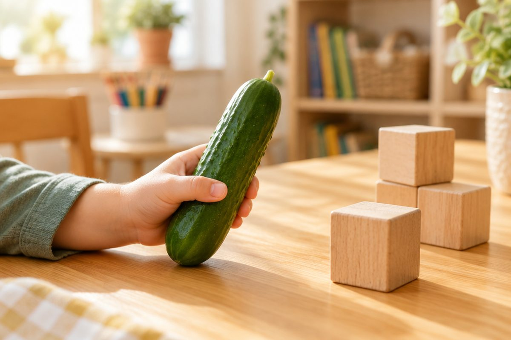

전체 단원 › 1학년 1학기 › 국어 › 1단계 · 모음 ㅏ ㅓ ㅗ ㅜ ㅡ ㅣ
입 모양을 바꾸면 어떤 소리가 날까?

입을 크게 벌리고 "아~" 해 봐요. 이번엔 입을 동그랗게 "오~". 소리가 달라졌지요? 오늘은 이렇게 입 모양으로 내는 글자, 모음을 만나요.
모음은 입 모양 소리예요
모음은 혼자서도 소리가 나요.
입 모양이 바뀌면 소리도 바뀌어요.
오늘은 모음 여섯 개를 배워요.
ㅏ ㅓ ㅗ ㅜ ㅡ ㅣ
서 있는 모음 ㅏ ㅓ ㅣ
ㅏ는 막대 오른쪽에 짧은 줄이 있어요.
ㅓ는 짧은 줄이 왼쪽에 있어요.
ㅣ는 막대 하나뿐이에요.
아 · 어 · 이
누워 있는 모음 ㅗ ㅜ ㅡ
ㅗ는 짧은 줄이 위에 있어요.
ㅜ는 짧은 줄이 아래에 있어요.
ㅡ는 누운 막대 하나예요.
오 · 우 · 으
ㅇ과 함께 글자로 써요
모음을 글자로 쓸 때는 ㅇ을 앞에 붙여요.
맨 앞의 ㅇ은 소리가 없어요.
모음 두 개로 낱말도 만들 수 있어요.
아이 · 오이 · 이
핵심 낱말
- 모음
- 입 모양으로 내는 소리 글자예요. 혼자서도 소리가 나요.
- ㅇ(이응)
- 모음 앞에 붙는 자리 글자예요. 맨 앞에서는 소리가 없어요.
- 입 모양
- 입을 벌리고, 오므리고, 옆으로 펴는 모양이에요.
꼭 알아야 할 표현
| 아 | ㅇ + ㅏ | 입을 크게 벌려요 |
| 어 | ㅇ + ㅓ | 입을 조금 덜 벌려요 |
| 오 | ㅇ + ㅗ | 입을 동그랗게 해요 |
| 우 | ㅇ + ㅜ | 입을 앞으로 쭉 내밀어요 |
| 으 | ㅇ + ㅡ | 입을 옆으로 살짝 펴요 |
| 이 | ㅇ + ㅣ | 입을 옆으로 쭉 펴요 |
| 아이 | 👶 어린 사람 | |
| 오이 | 🥒 길쭉한 초록 채소 | |
| 아 어 오 우 으 이 | 오늘 배운 모음 여섯 개를 차례로 읽어요 |
한 줄 정리
- 모음은 입 모양으로 내는 소리예요.
- 서 있는 모음은 ㅏ ㅓ ㅣ, 누워 있는 모음은 ㅗ ㅜ ㅡ예요.
- 글자로 쓸 때는 ㅇ을 붙여요: 아 어 오 우 으 이.
학교 교육과정 연결
- [2국04-01] 한글 자모의 이름과 소릿값을 알고 정확하게 발음하고 쓴다.